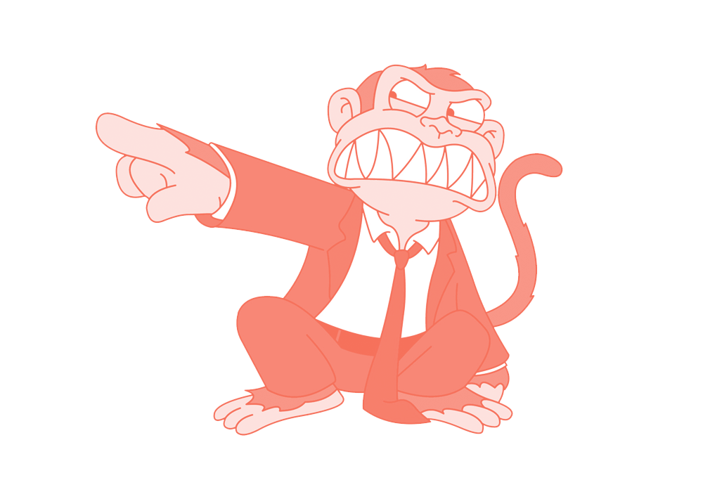

Проблемы Белых Идей
Пятая часть. Финальная.
Слабость воли
Как развить и укрепить
by Martyn & Sanch

А можно в этот раз покороче?
О двух мышлениях
О том как их подружить
Немножечко материалов по теме
DISCLAIMER
В нашем мире не всё, везде и всегда,
*Никакие правила не влияют на результат, они влияют на вероятность того или иного исхода
Два мышления
Сердце и Мозг
Сознание и Подсознание
Обезьянка и Рациональный тип
Слон и Погонщик
Неокортекс и Лимбический мозг + Рептильный мозг
Система 1 и Система 2
Животное и Человек Пассажир и машинист, эго и ид, контроль и автоматика, аналитика и интуиция, рефлексия и импульсивность...
🔗 Почему вас всё бесит?
Животное у руля
«Может ещё кусочек?»
«Ах, какая самочка/самец!»
«Сложно, мне лень думать»
«В понедельник начну с чистого листа»
«Каким же идиотом я вчера был»
«Бох поможет» / «Авось пронесёт»
«Каким же идиотом я вчера был»
«*@#$% &%@* #%&@#»
🙊🙈🙉
Человек
Умный +
Спокойный +
Сфокусированный +
Контролирует, планирует и терпит ±
Быстро устаёт -
Задачка
Бита и мяч вместе стоят 1 доллар и 10 центов, известно что бита на 1 доллар дороже. Сколько стоит мяч?
Ответ: 5 центов
Задачка 2
Маше 20 лет, она незамужняя, искренняя и оптимистичная девушка. Сдала ЕГЭ по русскому и английскому на 90 баллов из 100. Живёт недалеко от НГПУ. Слушает Монеточку и Гречку. Любит подшучивать над размерами стипендий студентов и тем, какие странные люди ходят по улицам.
Назовите наиболее вероятную занятость для Маши
Работает в книжном магазине и увлекается йогой
Промоутер
Аспирантка
Вокалистка в рок-группе
Студентка и промоутер
Ответ: раздаёт листовки на улице
На что можно потратить батарейку?
Принятие осознанных решений
Планирование дня
Концентрация на задачах
Подавление автоматических реакций
Обучение новому
Запоминание мелочей
Как использовать ресурс?
Наращивать ёмкость
Сокращать издержки
Регулярно отдыхать
Минимизировать повторные мысли
Разгружать рабочую память
Уменьшить вредные переключения
📺 Принципы экономии мыслетоплива


_animation.gif) 🎧 Как жить в союзе с мозгом?
🎧 Как жить в союзе с мозгом?

 🔗 obraz.io
🔗 obraz.io
 📺 А. Курпатов
📺 А. Курпатов